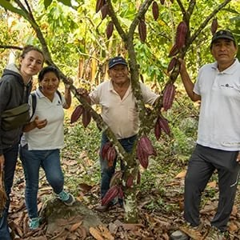

Comercio justo
Promovemos relaciones transparentes, una remuneración justa y el respeto por condiciones de trabajo dignas.
Nuestro origen ayacuchano nos conecta con las familias productoras del Valle de los ríos Apurímac, Ene y Mantaro. Una región donde el conocimiento de la tierra se transmite de generación en generación.
Trabajamos de manera directa con sus productores para acercar al mercado café, cacao y productos de la región. Detrás de cada cosecha hay experiencia, esfuerzo y una comunidad con la que compartimos nuevas oportunidades.

Promovemos relaciones transparentes, una remuneración justa y el respeto por condiciones de trabajo dignas.
Acompañamos a los productores en prácticas de cultivo sostenible, manejo agrícola y mejora de la calidad.
Impulsamos prácticas que cuidan el suelo, el agua y la biodiversidad que sostiene nuestras cosechas.